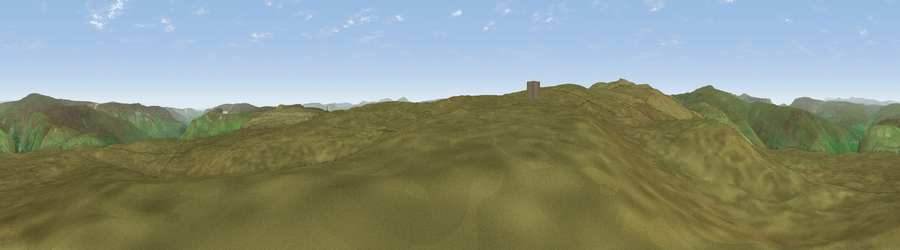

Viewpoint near Gunnerside
#11948 in England · top 33% of its area beats it · near GunnersideWhere it is
The exact computed spot (SD 90225 95975). Click the marker for map links.
The view, rendered

A 360° render of this exact spot computed from the terrain model, tree cover and land cover — summer colours, afternoon light, calibrated against photographs of famous viewpoints. Real trees, hedges and buildings will differ in detail.
The panorama
Grey silhouette: terrain skyline in each direction (720 bearings, Earth curvature and refraction included). Dashed green: skyline with trees (+15 m) and buildings (+8 m) as obstacles. Blue strip: how far the ground is visible on each bearing.
Where the view opens
Wedge length = distance to the farthest visible ground on that bearing (vegetation-aware). Rings at 10, 25 and 50 km.
What fills the view
100% grassland
Angular shares of the visible panorama (visual magnitude), not map area. Landscape diversity 0.01 (0–1 Shannon).
Key numbers
More beautiful places nearby
The staircase of upgrades: each row has a higher view potential than everything closer. Driving times are estimates from straight-line distance, calibrated against real road routing — check an actual route before setting out.
| Place | Direction | Drive | Score |
|---|---|---|---|
| Viewpoint near Cotterdale | WSW · 1 km | ~4 min | 66.9 |
| Viewpoint near Cotterdale | WSW · 2 km | ~6 min | 74.4 |
| Viewpoint c10024_7603 | WNW · 11 km | ~21 min | 76.9 |
| Viewpoint near Buckden | SSE · 18 km | ~31 min | 77.3 |
| Whernside | SW · 22 km | ~36 min | 79.9 |
| Viewpoint near Bampton | WNW · 47 km | ~68 min | 80.4 |
| Warton Crag | WSW · 47 km | ~68 min | 83.2 |
| Viewpoint near Watermillock | WNW · 51 km | ~72 min | 83.5 |
54.35921, -2.15192 · source: screening · position refined by local search. Computed location — check access rights before visiting.